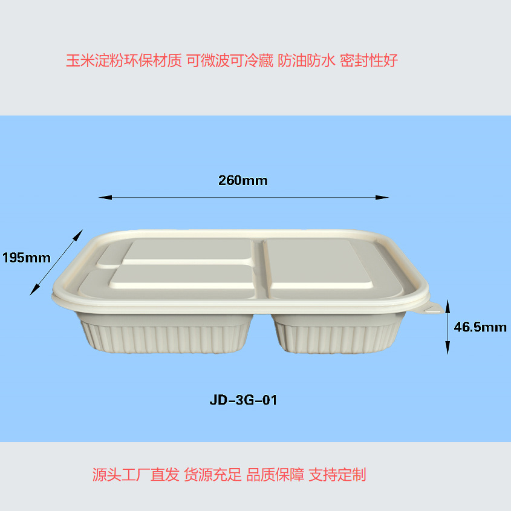
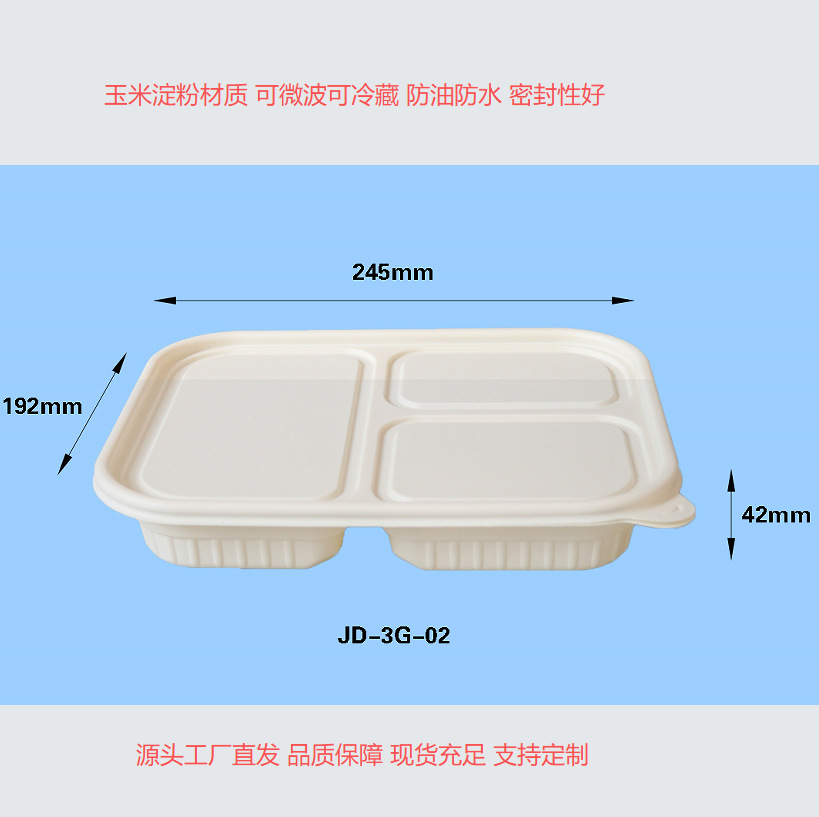
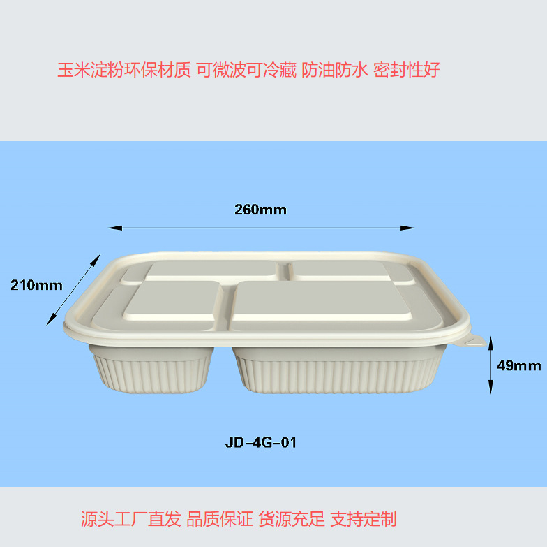
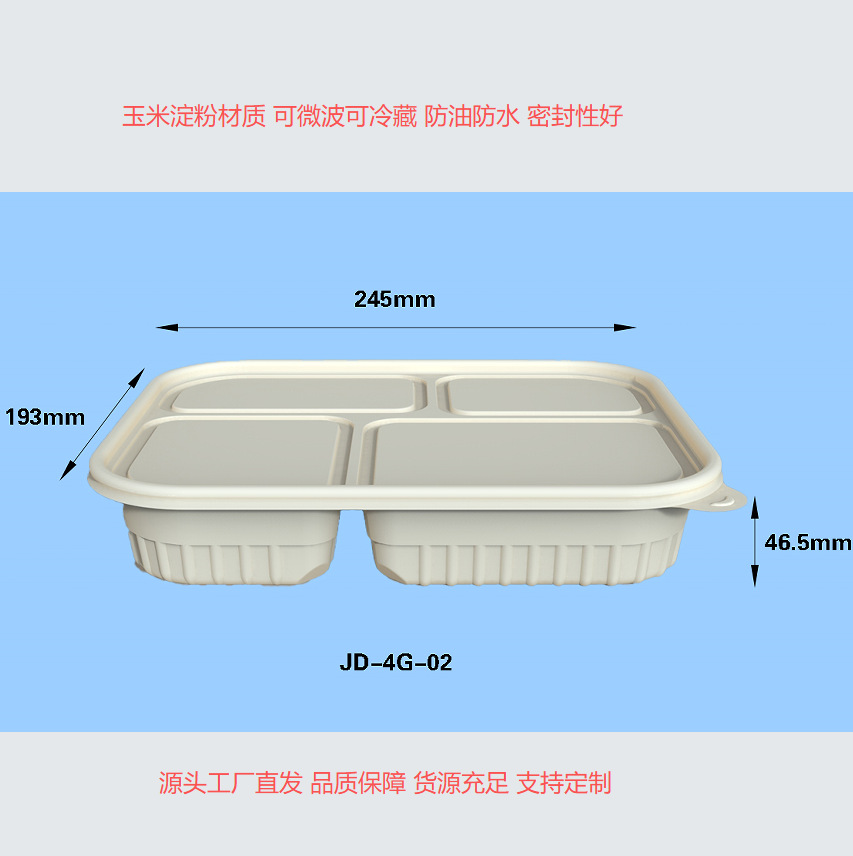
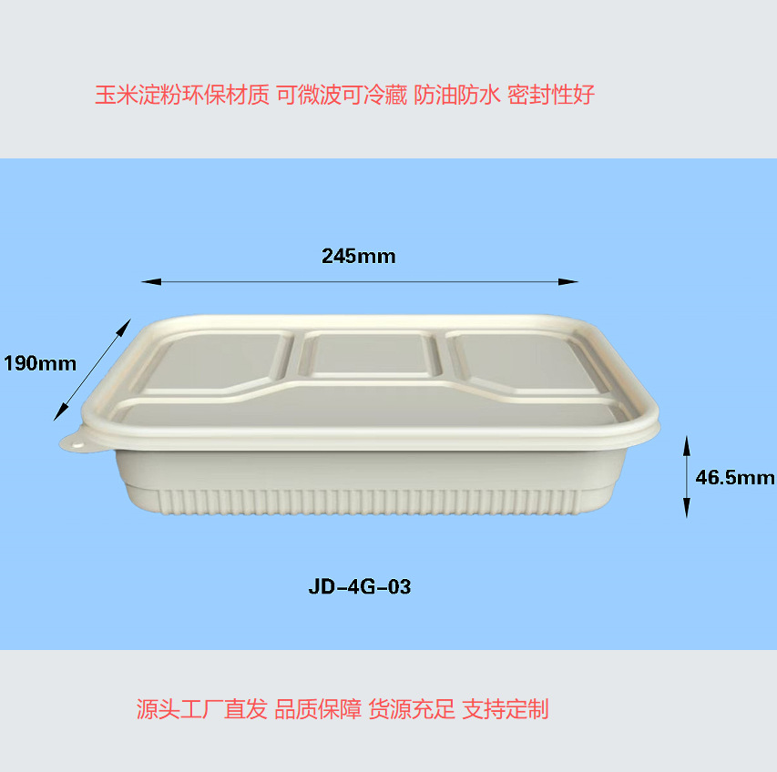

JD-3G-01 · 3 Compartments
260 × 195 × 46.5mm · 1100ml

Biodegradable 3 and 4 compartment meal boxes designed for catering, restaurants, meal prep and takeaway service. Five model options help buyers match different menus and portion layouts.
Five 1100ml models are available in 3 and 4 compartment layouts. Share your selected model, quantity and destination for a tailored quotation.
| Material | Biodegradable cornstarch-based material |
|---|---|
| Capacity | 1100ml |
| Compartments | 3 compartments / 4 compartments |
| Color | Natural cream |
| Packing | 20 pcs per bag · 400 pcs per carton |
| MOQ | 1,000 pieces |
| Performance | Water resistant, oil resistant and secure sealing |
| Heating & storage | Suitable for microwave use under recommended conditions and refrigeration |
| Customization | Custom logo and outer packaging available |
| Samples | Free samples available; shipping terms confirmed by destination |
| Lead time | Approximately 7–15 days after order confirmation |

260 × 195 × 46.5mm · 1100ml

245 × 192 × 42mm · 1100ml

260 × 210 × 49mm · 1100ml

245 × 193 × 46.5mm · 1100ml

245 × 190 × 46.5mm · 1100ml

DEBEI works with an experienced production supplier for forming, packing and bulk order preparation. Production and warehouse images shown are from our cooperating supplier.
Contact us for order planning, packing requirements, logo customization and shipping quotations.
Send the model number, order quantity, destination and customization requirements. Free samples are available.
Email Your RFQWhatsApp for Quote